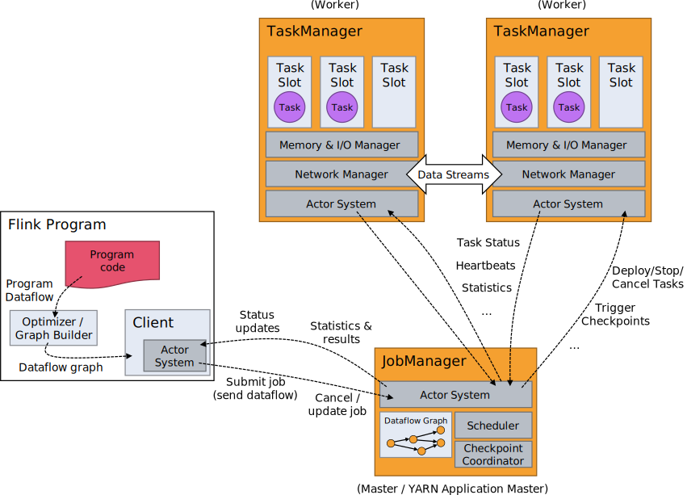

v1.2
v1.2
Distributed Runtime Environment
- Tasks and Operator Chains
- Job Managers, Task Managers, Clients
- Task Slots and Resources
- State Backends
- Savepoints
Tasks and Operator Chains
For distributed execution, Flink chains operator subtasks together into tasks. Each task is executed by one thread. Chaining operators together into tasks is a useful optimization: it reduces the overhead of thread-to-thread handover and buffering, and increases overall throughput while decreasing latency. The chaining behavior can be configured in the APIs.
The sample dataflow in the figure below is executed with five subtasks, and hence with five parallel threads.

Job Managers, Task Managers, Clients
The Flink runtime consists of two types of processes:
-
The JobManagers (also called masters) coordinate the distributed execution. They schedule tasks, coordinate checkpoints, coordinate recovery on failures, etc.
There is always at least one Job Manager. A high-availability setup will have multiple JobManagers, one of which one is always the leader, and the others are standby.
-
The TaskManagers (also called workers) execute the tasks (or more specifically, the subtasks) of a dataflow, and buffer and exchange the data streams.
There must always be at least one TaskManager.
The JobManagers and TaskManagers can be started in various ways: directly on the machines, in containers, or managed by resource frameworks like YARN. TaskManagers connect to JobManagers, announcing themselves as available, and are assigned work.
The client is not part of the runtime and program execution, but is used to prepare and send a dataflow to the JobManager.
After that, the client can disconnect, or stay connected to receive progress reports. The client runs either as part of the
Java/Scala program that triggers the execution, or in the command line process ./bin/flink run ....

Task Slots and Resources
Each worker (TaskManager) is a JVM process, and may execute one or more subtasks in separate threads. To control how many tasks a worker accepts, a worker has so called task slots (at least one).
Each task slot represents a fixed subset of resources of the TaskManager. A TaskManager with three slots, for example, will dedicate 1/3 of its managed memory to each slot. Slotting the resources means that a subtask will not compete with subtasks from other jobs for managed memory, but instead has a certain amount of reserved managed memory. Note that no CPU isolation happens here; currently slots only separate the managed memory of tasks.
By adjusting the number of task slots, users can define how subtasks are isolated from each other. Having one slot per TaskManager means each task group runs in a separate JVM (which can be started in a separate container, for example). Having multiple slots means more subtasks share the same JVM. Tasks in the same JVM share TCP connections (via multiplexing) and heartbeat messages. They may also share data sets and data structures, thus reducing the per-task overhead.

By default, Flink allows subtasks to share slots even if they are subtasks of different tasks, so long as they are from the same job. The result is that one slot may hold an entire pipeline of the job. Allowing this slot sharing has two main benefits:
-
A Flink cluster needs exactly as many task slots as the highest parallelism used in the job. No need to calculate how many tasks (with varying parallelism) a program contains in total.
-
It is easier to get better resource utilization. Without slot sharing, the non-intensive source/map() subtasks would block as many resources as the resource intensive window subtasks. With slot sharing, increasing the base parallelism in our example from two to six yields full utilization of the slotted resources, while making sure that the heavy subtasks are fairly distributed among the TaskManagers.

The APIs also include a resource group mechanism which can be used to prevent undesirable slot sharing.
As a rule-of-thumb, a good default number of task slots would be the number of CPU cores. With hyper-threading, each slot then takes 2 or more hardware thread contexts.
State Backends
The exact data structures in which the key/values indexes are stored depends on the chosen state backend. One state backend stores data in an in-memory hash map, another state backend uses RocksDB as the key/value store. In addition to defining the data structure that holds the state, the state backends also implement the logic to take a point-in-time snapshot of the key/value state and store that snapshot as part of a checkpoint.

Savepoints
Programs written in the Data Stream API can resume execution from a savepoint. Savepoints allow both updating your programs and your Flink cluster without losing any state.
Savepoints are manually triggered checkpoints, which take a snapshot of the program and write it out to a state backend. They rely on the regular checkpointing mechanism for this. During execution programs are periodically snapshotted on the worker nodes and produce checkpoints. For recovery only the last completed checkpoint is needed and older checkpoints can be safely discarded as soon as a new one is completed.
Savepoints are similar to these periodic checkpoints except that they are triggered by the user and don’t automatically expire when newer checkpoints are completed.